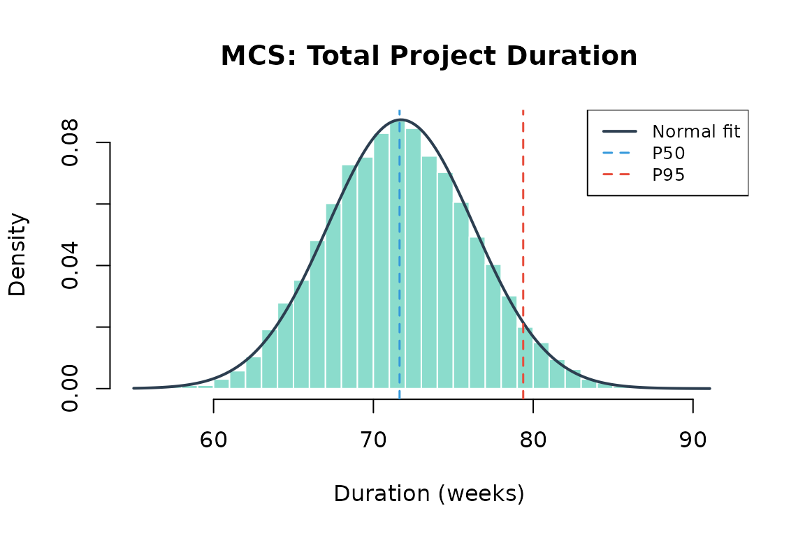
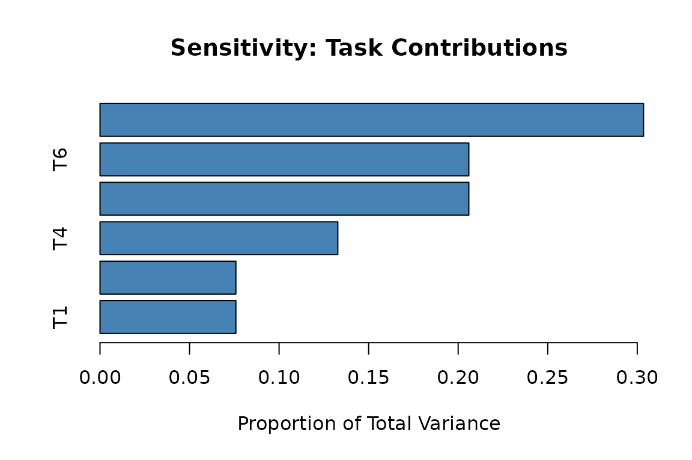
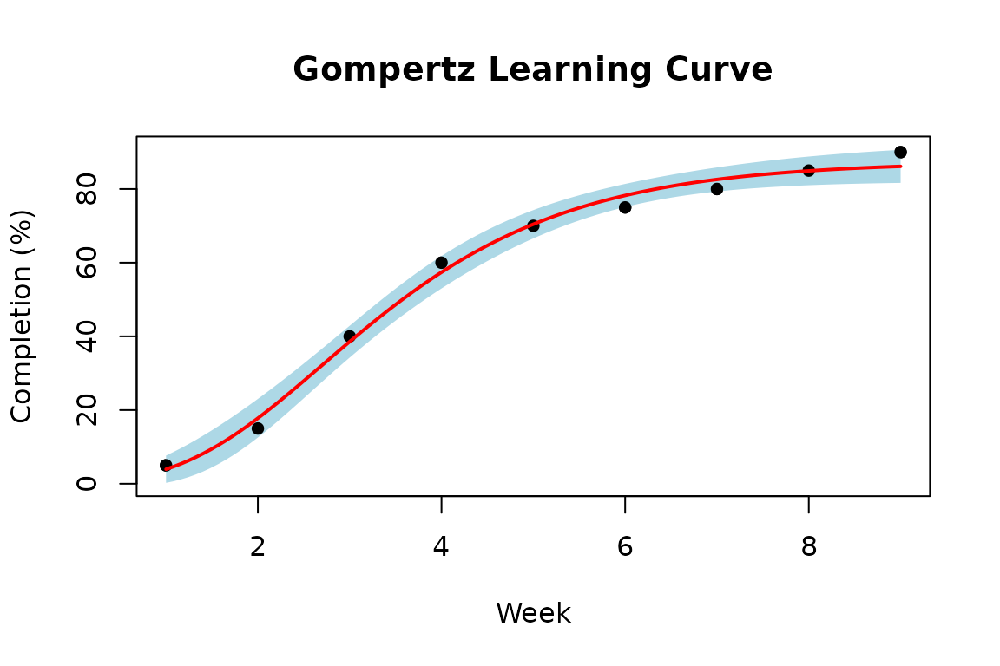
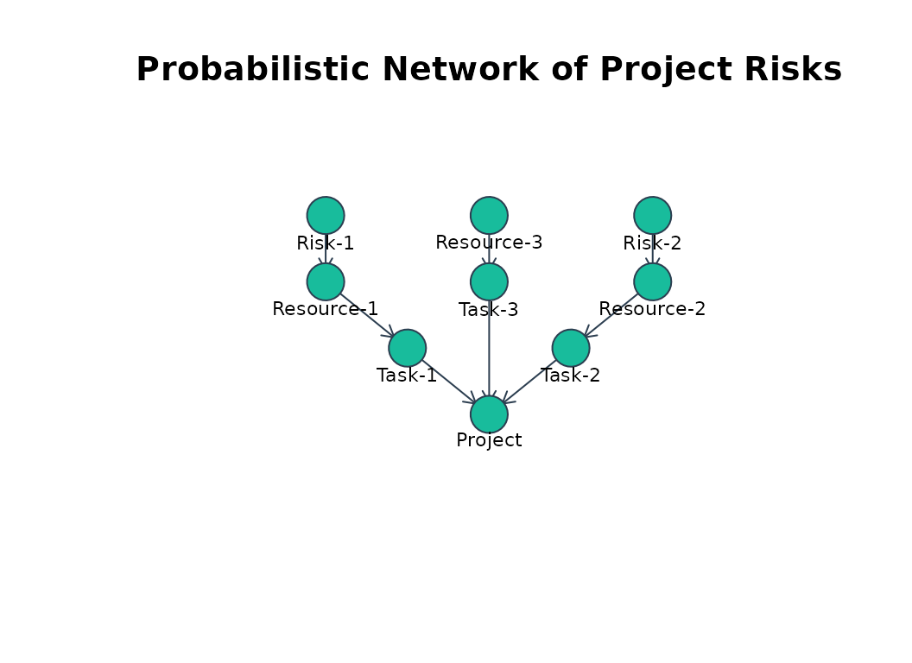
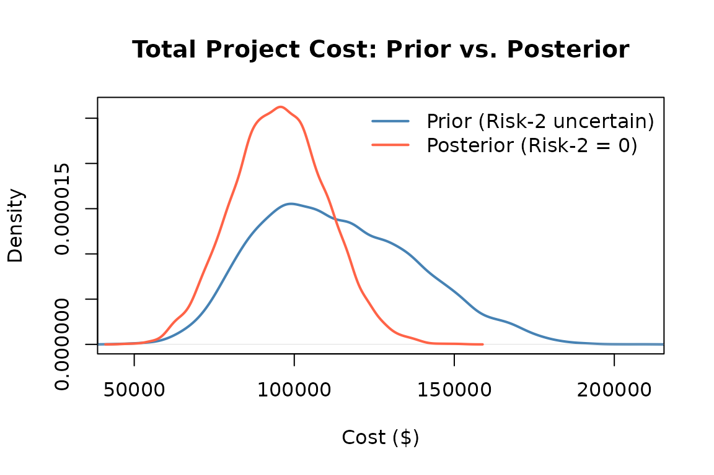
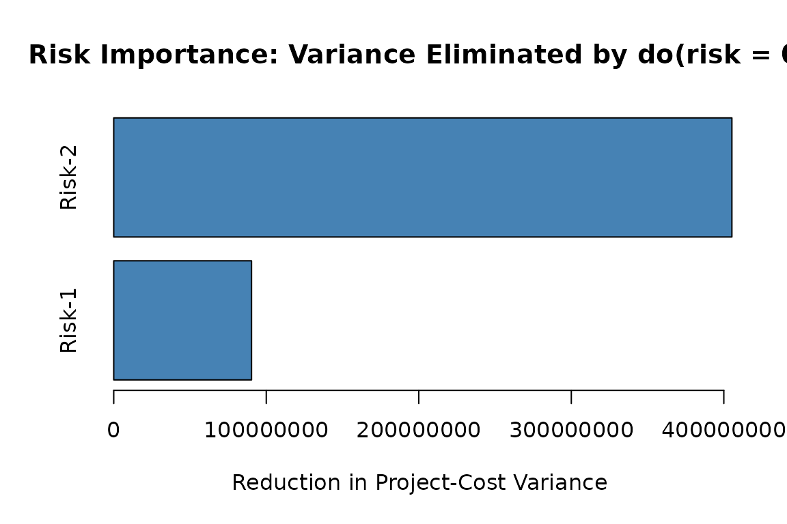
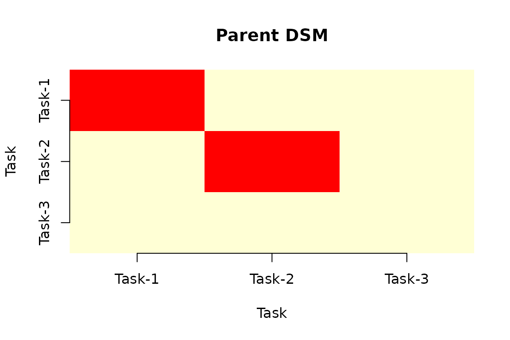
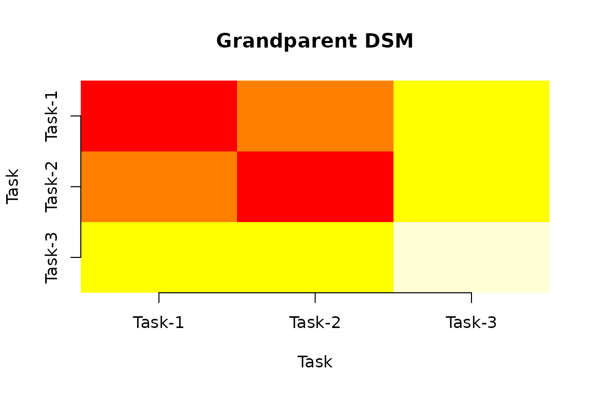
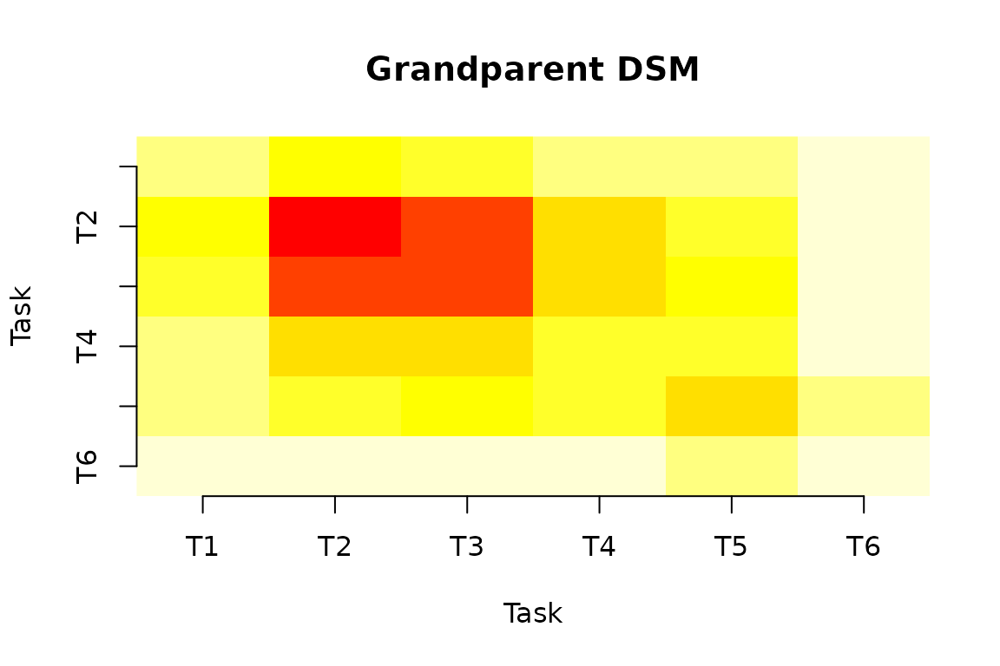

PRA unifies a core set of widely adopted quantitative project risk analysis methods in a single, open-source implementation: the Second Moment Method (SMM), Monte Carlo simulation (MCS), earned value management (EVM), contingency and sensitivity analysis, noisy-OR risk inference and updating, sigmoidal learning curves, and design structure matrices (DSM). Beyond this foundational core, PRA implements probabilistic network methods for project risk, supporting the forward simulation of cost uncertainty and Bayesian conditioning along causal chains. PRA also exposes its core analytical functions as tools over the Model Context Protocol (MCP), so that large-language-model agents can run project risk analyses directly.
This vignette walks through every module in turn, with working code drawn from a single R session, and closes with an integrated case study.
Introduction
Quantitative risk analysis is a foundational discipline in project management, enabling organizations to assess schedule and cost uncertainty, identify high-impact risk drivers, and set evidence-based contingency reserves. This vignette presents PRA, an open-source R package that unifies the core quantitative methods of project risk analysis, schedule and cost uncertainty, earned value management, sensitivity and contingency analysis, learning curves, and dependency structure analysis, under a single, reproducible API.
Despite broad industry adoption of quantitative methods, open-source
tooling for integrated project risk analysis in R remains fragmented.
Proprietary platforms such as Oracle Primavera Risk Analysis and
Palisade @RISK provide integrated workflows but impose licensing costs
and limit reproducibility. Within R, no single package unifies Monte
Carlo risk analysis, earned value management, noisy-OR risk inference,
sigmoidal learning curves, and dependency structure analysis under a
common API. The mc2d package (Pouillot and Delignette-Muller 2010)
provides general-purpose two-dimensional Monte Carlo simulation but has
no project-specific constructs. The sensitivity package
(Iooss et al.
2024) implements variance-based indices for general functions
but does not integrate with schedule or cost models. EVM metrics are
absent from CRAN entirely. Bayesian packages such as
rstan (Stan
Development Team 2024) and brms (Bürkner 2017) operate
at a high level of generality and require substantial expertise to apply
in project risk contexts. For probabilistic networks specifically,
bnlearn (Scutari 2010) and gRain
(Højsgaard 2012)
are the established R tools: bnlearn provides structure
and parameter learning along with graph-surgery interventions through
mutilated(), and gRain performs exact
junction-tree inference. Both are more general and more capable
inference engines than the sampling-based module of Probabilistic Networks. However, neither carries
a project-risk vocabulary of risks, resources, and tasks, and neither
connects to schedule, cost, or earned value; PRA’s
contribution is that project layer rather than the underlying
inference.
PRA is the first package available on CRAN to integrate these project risk analysis methods in a single API. The comparison table below covers the closest general-purpose Monte Carlo and sensitivity packages and the dominant commercial platform, while a broader survey of project-specific R packages is provided below. Where the existing ecosystem is fragmented across general-purpose packages, none of which are project-specific, PRA provides a single reproducible, auditable API for the full workflow, integrating outputs across modules in a way that the fragmented ecosystem does not. For example, MCS results are directly fed into contingency and sensitivity analyses, and noisy-OR risk updates can re-parameterize task distributions for subsequent simulations. The package targets project analysts who work in R and require outputs that are compatible with standard reporting pipelines. It is annotated against the rOpenSci Statistical Software Review (SRR) general standards (rOpenSci Statistical Software Peer Review 2021) and uses minimal hard dependencies: mc2d (Pouillot and Delignette-Muller 2010) for triangular distribution families and minpack.lm (Elzhov et al. 2016) for nonlinear least-squares fitting.
PRA also provides an R implementation of probabilistic-network methods for project risk that grounds causal networks in the resource-based view, showing that organizational capabilities and shared resources, not schedule uncertainty alone, are the structural pathways through which risks propagate across project tasks (Govan 2014; Govan and Damnjanovic 2016). This approach is extended with structural network measures that quantify the topology of project risk networks (Govan and Damnjanovic 2020). The probabilistic network module operationalizes these ideas by propagating distributions through the causal chain from risks to the total project risk.
PRA is the first project risk analysis package to
expose its core analytical methods as tools callable by LLM agents over
the Model Context Protocol (MCP). The optional MCP server is activated
through Suggests-only dependencies; therefore, the
analytical core incurs no additional runtime cost.
The following table underscores the primary contribution: no existing R package or commercial platform covers the foundational project risk workflow that PRA unifies. It summarizes how PRA compares with the most closely related R packages and the dominant commercial platform.
| Feature | PRA | mc2d | sensitivity | rstan/brms | bnlearn/gRain | @RISK |
|---|---|---|---|---|---|---|
| MCS schedule risk | Yes | Partial | — | — | — | Yes |
| EVM (11 metrics) | Yes | — | — | — | — | Yes |
| Noisy-OR updating | Yes | — | — | Yes | Partial | — |
| Learning curves | Yes | — | — | — | — | — |
| Design structure matrices | Yes | — | — | — | — | — |
| Probabilistic networks | Yes | — | — | Partial | Yes | — |
| MCP tool server | Yes | — | — | — | — | — |
| Open-source (CRAN) | Yes | Yes | Yes | Yes | Yes | — |
| SRR general standards | Yes | — | — | — | — | — |
A small number of CRAN packages do target project management specifically, but each addresses a single slice of the workflow rather than the integrated whole. The ProjectManagement package (Gonçalves-Dosantos et al. 2022) is the closest in spirit: it implements deterministic and stochastic scheduling, PERT/CPM, critical-path identification, and Monte Carlo simulation over activity durations, and is complementary to the schedule-network extension planned for PRA (see the Summary), but it does not provide earned value management, noisy-OR risk updating, learning curves, dependency structure matrices, or probabilistic networks. The plan package (Kelley 2023) produces Gantt and burn-down charts for project visualization but performs no risk quantification. More generally, decision-analysis packages such as decisionSupport (Luedeling et al. 2023) apply Monte Carlo simulation to cost–benefit models under uncertainty, but are not organized around project-schedule or earned-value constructs. None of these packages, nor any single package on CRAN, spans the foundational project risk workflow that PRA unifies.
The gap is not limited to R: open-source tooling for integrated project risk analysis remains sparse across languages, and no package in another ecosystem matches PRA’s combined scope either. In Python, PyCostTools (Frank 2023) implements learning-curve and cost-estimating-relationship models similar in spirit to PRA’s learning curves, but remains a low-adoption project without peer-reviewed documentation. The general-purpose PyMC (Salvatier et al. 2016) supports arbitrary Bayesian models but, unlike PRA’s probabilistic-network module, has no project-risk-specific vocabulary of risks, resources, and tasks. In Julia, MCHammer.jl (Torkia 2023) provides Monte Carlo business-risk modeling with correlated sampling and sensitivity tornado charts in the style of Crystal Ball and @RISK, but has seen minimal maintenance activity in recent years. Design structure matrix tools outside R target software and systems architecture rather than project risk, and no citable academic survey of open-source project-risk software outside R could be located; this survey is therefore drawn directly from the individual tools’ own repositories rather than a secondary source.
The package is installed from CRAN in the standard way:
install.packages("PRA")
library("PRA")Optional dependencies, ellmer (Wickham et al. 2025),
mcptools (Couch et al. 2025), and
jsonlite (Ooms 2014), are only required for the
MCP server, pra_mcp_server().
The remainder of this vignette describes each analytical module in turn, with working code examples drawn from the same R session.
- Schedule and Cost Uncertainty covers SMM, MCS, contingency, sensitivity, and correlation matrix construction.
- Earned Value Management covers the eleven EVM metrics.
- Learning Curves covers sigmoidal growth models.
- Noisy-OR Risk Inference covers prior and posterior risk probabilities.
- Probabilistic Networks introduces the network module.
- Dependency Structure Analysis covers design structure matrices, built from that same network example.
- Model Context Protocol Integration describes the agent layer.
- Illustrative Case Study works an end-to-end analysis.
Schedule and Cost Uncertainty
Two complementary methods are provided for quantifying schedule and cost uncertainty: the Second Moment Method for rapid analytical estimates, and Monte Carlo simulation for full distributional analysis. Contingency extraction and sensitivity analysis complete the workflow.
To illustrate the workflow, PRA includes
building_project, a bundled example dataset describing a
mid-rise commercial building with six work packages, adapted from the
construction-project examples in Damnjanovic and
Reinschmidt (2020).
data("building_project", package = "PRA")
bp <- building_project
bp$task_names
#> [1] "Site Preparation & Earthworks" "Foundations"
#> [3] "Structural Frame" "Building Envelope"
#> [5] "Mechanical/Electrical/Plumbing" "Interior Fit-out & Finishes"Second Moment Method
The Second Moment Method (SMM) propagates task-level means and
variances to project-level estimates using the Central Limit Theorem
(Benjamin and Cornell
2000). For a project with
tasks:
The six task durations are triangular, so their means and variances may
be obtained in closed-form and propagated with smm() at the
project level.
tri_mean <- function(d) (d$a + d$b + d$c) / 3
tri_var <- function(d) (d$a^2 + d$b^2 + d$c^2 -
d$a * d$b - d$a * d$c - d$b * d$c) / 18
task_means <- vapply(bp$task_distributions, tri_mean, numeric(1))
task_vars <- vapply(bp$task_distributions, tri_var, numeric(1))
result <- smm(task_means, task_vars)
cat("Total mean:", round(result$total_mean, 2), "weeks\n")
#> Total mean: 71.67 weeks
cat("Total SD: ", round(result$total_std, 2), "weeks\n")
#> Total SD: 4.53 weeksPositive correlation between tasks inflates the total variance;
smm() accepts a correlation matrix and adds the covariance
terms analytically:
result_cor <- smm(task_means, task_vars, bp$cor_mat)
cat("Total SD (correlated):", round(result_cor$total_std, 2), "weeks\n")
#> Total SD (correlated): 6.59 weeksSMM is useful when only first and second moments are available and a rapid estimate is needed. When task distributions are non-normal or accurate tail behavior is required, Monte Carlo simulation is preferred.
Monte Carlo Simulation
mcs() propagates uncertainty through a project network
by drawing samples from user-specified task distributions, triangular,
normal, or uniform, over a large number of iterations (Vose 2008). By
default the tasks are sampled independently, with an optional
correlation matrix that induces dependence between them. For a project
with
tasks, one simulated draw of the total duration is
where
is the
-th
draw of task
’s
duration, and the project-level estimates are the Monte Carlo moments of
the
simulated totals,
When a correlation matrix
is supplied, dependence between tasks is induced by Cholesky
decomposition. The correlation matrix is factored as
,
and a matrix
of independent standard normal draws (columns = tasks) is
right-multiplied by the Cholesky factor
,
producing normal scores that carry exactly the target correlation.
Because task distributions are in general not normal, the correlated
scores are then returned to each task’s own scale: the standard normal
CDF
maps each score to a percentile, and each task’s inverse CDF
maps that percentile back to a duration,
set.seed(42)
results <- mcs(10000, bp$task_distributions)
cat("Simulated mean:", round(results$total_mean, 2), "weeks\n")
#> Simulated mean: 71.72 weeks
cat("Simulated SD: ", round(results$total_sd, 2), "weeks\n")
#> Simulated SD: 4.57 weeksThe mcs() function returns an S3 object of class
"mcs" with print(), summary() and
plot() methods. Every class PRA returns
implements all three. The summary() method reports a wider
percentile grid than print() does, and returns it as a
"summary.mcs" object so the values can be used
programmatically. The full simulated distribution is available in
results$total_distribution. On a modern laptop, 10,000
simulations of a six-task network complete in under one second;
increasing the count to 100,000 provides more precise tail estimates at
roughly ten-fold additional runtime. The default of 10,000 balances
accuracy and speed for most practical analyses.
Supplying the dataset’s correlation matrix induces dependence between the tasks through the transform above:
set.seed(42)
results_cor <- mcs(10000, bp$task_distributions, bp$cor_mat)
cat("Simulated SD (correlated):", round(results_cor$total_sd, 2), "weeks\n")
#> Simulated SD (correlated): 6.57 weeksNumerical Validation
For independent tasks the SMM estimates are the exact first two moments of the total: the total mean equals the sum of the task means by linearity of expectation, and the total variance equals the sum of the task variances by additivity of variance under independence. Supplying the correlation matrix adds the covariance terms analytically, giving a second exact target. Monte Carlo simulation should reproduce both, and it does, to within Monte Carlo error. The correlated comparison is the sharper test of the two: an error in the Cholesky factorization or in the rank-to-scale mapping would surface here as a mismatched total variance, while leaving the independent case untouched.
cat(sprintf("Mean: SMM %.2f vs MCS %.2f\n",
result$total_mean, results$total_mean))
#> Mean: SMM 71.67 vs MCS 71.72
cat(sprintf("SD: SMM %.2f vs MCS %.2f\n",
result$total_std, results$total_sd))
#> SD: SMM 4.53 vs MCS 4.57
cat(sprintf("SD (correlated): SMM %.2f vs MCS %.2f\n",
result_cor$total_std, results_cor$total_sd))
#> SD (correlated): SMM 6.59 vs MCS 6.57
plot(results, main = "MCS: Total Project Duration",
xlab = "Duration (weeks)")
Distribution of simulated total project durations, drawn by the
plot method for mcs objects. The solid curve
is the moment-matched normal; the dashed lines mark the median and the
95th percentile.
Correlation Matrix Construction
Both smm() and mcs() accept a correlation
matrix to model dependence between tasks. cor_matrix()
supplies one by sampling from a set of task distributions, giving a
correctly shaped, positive-definite baseline for testing; correlations
reflecting genuine shared drivers are best drawn from historical data or
expert elicitation. For samples
,
,
drawn from each of
task distributions
,
cor_matrix() returns the empirical Pearson correlation
matrix
with entries
set.seed(42)
dists <- list(
normal = function(n) rnorm(n, mean = 10, sd = 2),
triang = function(n) mc2d::rpert(n, min = 5, mode = 10, max = 15),
uniform = function(n) runif(n, min = 8, max = 12)
)
C_emp <- cor_matrix(num_samples = 1000, num_vars = 3, dists = dists)
print(round(C_emp, 3))
#> normal triang uniform
#> normal 1.000 -0.038 -0.019
#> triang -0.038 1.000 0.053
#> uniform -0.019 0.053 1.000Contingency Analysis
contingency() extracts a reserve buffer as the
difference between a high-confidence percentile and the base (median)
estimate, a standard approach in project risk practice (Project Management Institute
2021). Writing
for the empirical
-th
quantile of the simulated total duration
,
the contingency reserve is
reserve <- contingency(results, phigh = 0.80, pbase = 0.50)
cat("Schedule contingency (P80 - P50):", round(reserve, 2), "weeks\n")
#> Schedule contingency (P80 - P50): 3.98 weeksSensitivity Analysis
sensitivity() decomposes total project variance by task
contribution, producing the inputs for a Tornado chart. Each task’s
index is its own variance plus its covariance with every other task,
expressed as a proportion of total project variance. Let
be task
’s
variance and
its covariance with task
(zero if no correlation matrix is supplied). Total project variance
decomposes as
and sensitivity() reports each task’s share of that total,
sens <- sensitivity(bp$task_distributions)
names(sens) <- paste0("T", seq_along(sens))
barplot(sort(sens),
horiz = TRUE, col = "steelblue",
main = "Sensitivity: Task Contributions",
xlab = "Proportion of Total Variance"
)
Tornado chart: each bar shows a task’s share of total project duration variance, sorted ascending so the largest driver appears at the top.
Tasks with larger bars are the dominant drivers of total risk; mitigation resources should be directed there first.
Earned Value Management
The EVM module implements the complete ANSI/EIA-748 suite of eleven performance metrics (Fleming and Koppelman 2010). The three core quantities, Planned Value (PV), Earned Value (EV), and Actual Cost (AC), are computed first. All performance indices and forecasts follow from them. Consider a project with a $500,000 budget at completion, evaluated at period 3 of a 5-period schedule with cumulative planned value 10/25/50/75/100%:
bac <- 500000
schedule <- c(0.10, 0.25, 0.50, 0.75, 1.00)
time_period <- 3At this reporting point, 40% of scope is actually complete, and actual costs of $45,000, $110,000, and $135,000 have been incurred across the three periods to date:
pv_val <- pv(bac, schedule, time_period)
ev_val <- ev(bac, actual_per_complete = 0.40)
ac_val <- ac(c(45000, 110000, 135000), time_period, cumulative = FALSE)
cat("PV: $", format(pv_val, big.mark = ","), "\n")
#> PV: $ 250,000
cat("EV: $", format(ev_val, big.mark = ","), "\n")
#> EV: $ 200,000
cat("AC: $", format(ac_val, big.mark = ","), "\n")
#> AC: $ 290,000The Schedule Performance Index, Cost Performance Index, Schedule Variance, and Cost Variance follow directly from PV, EV, and AC:
spi_val <- spi(ev_val, pv_val)
cpi_val <- cpi(ev_val, ac_val)
sv_val <- sv(ev_val, pv_val)
cv_val <- cv(ev_val, ac_val)
cat("SPI:", round(spi_val, 3), " CPI:", round(cpi_val, 3), "\n")
#> SPI: 0.8 CPI: 0.69
cat("SV: $", format(round(sv_val), big.mark = ","),
" CV: $", format(round(cv_val), big.mark = ","), "\n")
#> SV: $ -50,000 CV: $ -90,000Both SPI
and CPI
indicate the project is behind schedule and over budget. The
eac() function provides three completion forecasts under
different efficiency assumptions (Fleming and Koppelman 2010):
The typical method assumes remaining work proceeds at the cumulative
cost efficiency to date; the atypical method assumes the overrun to date
was a one-off and future work runs on plan; the combined method deflates
the remaining budget by both cost and schedule performance.
cat("EAC (typical): $", format(round(eac(bac, method = "typical",
cpi = cpi_val)), big.mark = ","), "\n")
#> EAC (typical): $ 725,000
cat("EAC (atypical): $", format(round(eac(bac, method = "atypical",
ac = ac_val, ev = ev_val)), big.mark = ","), "\n")
#> EAC (atypical): $ 590,000
cat("EAC (combined): $", format(round(eac(bac, method = "combined",
cpi = cpi_val, ac = ac_val, ev = ev_val, spi = spi_val)),
big.mark = ","), "\n")
#> EAC (combined): $ 833,750The remaining EVM metrics are:
eac_typ <- eac(bac, method = "typical", cpi = cpi_val)
cat("ETC: $",
format(round(etc(bac, ev_val, cpi = cpi_val)), big.mark = ","), "\n")
#> ETC: $ 435,000
cat("TCPI:", round(tcpi(bac, ev_val, ac_val), 3), "\n")
#> TCPI: 1.429
cat("VAC: $", format(round(vac(bac, eac_typ)), big.mark = ","), "\n")
#> VAC: $ -225,000The To-Complete Performance Index (TCPI) reports the cost efficiency required on all remaining work to finish within the original budget; values substantially above 1.0 signal an unrealistic recovery target. The Estimate to Complete (ETC) gives the projected cost of the remaining work under the typical-method efficiency assumption, and the negative Variance at Completion (VAC) confirms the project is tracking toward a budget overrun rather than an underrun.
Learning Curves
Sigmoidal (S-curve) models capture the characteristic pattern of project progress: slow start, rapid acceleration, and plateau approaching 100% completion. PRA provides two model types, Logistic and Gompertz, fitted via the Levenberg–Marquardt nonlinear least-squares algorithm in minpack.lm (Elzhov et al. 2016). The Logistic model has the closed form while the Gompertz model is Each model is fit by nonlinear least squares, where is or and is the corresponding curve.
progress <- data.frame(
time = 1:9,
completion = c(5, 15, 40, 60, 70, 75, 80, 85, 90)
)
fit_log <- fit_sigmoidal(progress, "time", "completion", "logistic")
fit_gomp <- fit_sigmoidal(progress, "time", "completion", "gompertz")
cat("Logistic RSE: ", round(summary(fit_log)$sigma, 2), "\n")
#> Logistic RSE: 4.15
cat("Gompertz RSE: ", round(summary(fit_gomp)$sigma, 2), "\n")
#> Gompertz RSE: 2.89The Gompertz model has the lower residual standard error of the two
here, reflecting the asymmetric approach to the 90% plateau in the
observed data, and is therefore carried forward for the confidence band
and forecasts below. The Logistic form remains available via
fit_sigmoidal(). Its symmetric acceleration and
deceleration is the more common default assumption for project progress
curves, and comparing the two residual standard errors is the
recommended way to choose between them in practice.
plot_sigmoidal(fit_gomp, progress, "time", "completion", "gompertz",
conf_level = 0.95,
main = "Gompertz Learning Curve",
xlab = "Week", ylab = "Completion (%)")
Gompertz learning curve over the observed data range, with a 95% confidence band. The band is narrowest in the middle of the range, where the observations most tightly constrain the fit, and widens toward both ends.
predict_sigmoidal() generates forecasts with confidence
bounds at arbitrary future time points:
preds <- predict_sigmoidal(fit_gomp, seq(10, 12, by = 0.5),
"gompertz", conf_level = 0.95)
print(round(preds, 1))
#> x pred lwr upr
#> 1 10.0 86.8 81.9 91.7
#> 2 10.5 87.0 81.9 92.0
#> 3 11.0 87.1 81.9 92.3
#> 4 11.5 87.2 81.9 92.5
#> 5 12.0 87.3 81.9 92.6The forecast extends the fitted curve past the last observed week (9) out to week 12, with intervals of the form that widen with the horizon. The point estimates rise only slightly across that span, since the curve is already near its fitted asymptote , which on nine observations is best read as a lower bound on eventual completion.
Noisy-OR Risk Inference
Project risks are frequently triggered by one or more underlying root
causes whose presence is uncertain. PRA models this
with a noisy-OR risk network (Pearl 1988): each root cause
acts on a risk event
independently, and
occurs if it is triggered by at least one cause. Write
for the probability that cause
alone triggers
when it is present and
for the corresponding probability when it is absent; these are the link
probabilities supplied as risks_given_causes and
risks_given_not_causes. Note that
is not the model’s conditional
,
which is larger because the remaining causes may also fire. We
illustrate with the schedule-delay risk in
building_project, which has two candidate causes.
Prior Risk Probability
risk_prob() first computes each cause’s marginal
contribution by the law of total probability,
and then combines the independent causes with a noisy-OR,
which always lies in
and reduces to the single-cause marginal when
.
Posterior Risk Probability
When some causes are subsequently observed, for example, a site
inspection confirms one cause is present while the other remains
unknown, risk_post_prob() updates the estimate. An observed
cause is fixed to its conditional probability, while an unobserved cause
(coded NA) retains its marginal contribution
;
the causes are recombined with the same noisy-OR, so prior and posterior
share a common scale:
post_delay <- risk_post_prob(
bp$cause_probs, bp$risks_given_causes,
bp$risks_given_not_causes, bp$observed_causes
)
cat("Posterior P(schedule delay):", round(post_delay, 3),
" (observed causes:", paste(bp$observed_causes, collapse = ", "), ")\n")
#> Posterior P(schedule delay): 0.797 (observed causes: 1, NA )Observing an aggravating cause raises the posterior risk probability; observing a mitigating one lowers it. The update conditions on the observed causes within a fixed model rather than revising beliefs about the model’s own parameters, and the diagnostic direction, , is not computed. This closed-form update is inexpensive and complements the sample-based conditioning of the probabilistic network module, which operates on full cost distributions rather than event probabilities.
Probabilistic Networks
This module is an implementation of probabilistic-network methods for project risk (Govan 2014; Govan and Damnjanovic 2016, 2020). The module is not a general Bayesian-network engine, since other packages already fill that role in R: bnlearn and gRain. What follows is the project-risk layer, in which nodes are risks, resources, tasks, and the project total, and in which the quantity propagated is cost. The probabilistic network is a directed acyclic graph in which nodes represent project variables (risks, resources, tasks, and the project total) and edges encode conditional dependencies (Pearl 2009), attaching a probability distribution to each node so that cost uncertainty can be propagated forward along the causal chain from risks to total project cost and conditioned on observed evidence. Dependency Structure Analysis revisits this same example network from a structural perspective, asking which tasks share resources or risk exposure rather than how their costs propagate.
Building a Network
prob_net() constructs the network from a node data
frame, a links data frame, and a named list of distributions.
Distributions may be normal, lognormal,
uniform, discrete, or conditional
(switching between two sub-distributions depending on a discrete parent
node); aggregate nodes sum their parents. A probabilistic
network encodes a joint distribution over nodes
that factorizes according to the DAG’s parent structure,
where
denotes the values of
’s
parent nodes (the condition node for a conditional
distribution, or the summed parents for an aggregate node) (Pearl 2009). The
links are load-bearing rather than descriptive: prob_net()
requires the edges to match the dependencies the distributions declare,
so a graph that disagrees with its distributions is rejected at
construction, and it requires the nodes to be supplied in a topological
order, which is the order prob_net_sim() samples in and
which also guarantees the graph is acyclic.
The example network below has nine nodes: two risks (Risk-1, Risk-2), three resources (Resource-1, Resource-2, Resource-3), three tasks (Task-1, Task-2, Task-3), and the project total. Risk-1 occurs with probability 0.70 and Risk-2 with probability 0.60; each risk feeds one resource, whose cost distribution switches to a higher-mean, higher-variance branch when its risk occurs, while Resource-3 carries no risk dependency. Each resource aggregates one-to-one into a task (Task-1 from Resource-1, Task-2 from Resource-2, Task-3 from Resource-3), and the three tasks sum into the project total.
nodes <- data.frame(
id = c("A","B","C","D","E","F","G","H","I"),
label = c("Risk-1","Risk-2","Resource-1","Resource-2","Resource-3",
"Task-1","Task-2","Task-3","Project"),
stringsAsFactors = FALSE
)
links <- data.frame(
source = c("A","B","C","D","E","F","G","H"),
target = c("C","D","F","G","H","I","I","I"),
stringsAsFactors = FALSE
)
distributions <- list(
A = list(type = "discrete", values = c(1, 0), probs = c(0.70, 0.30)),
B = list(type = "discrete", values = c(1, 0), probs = c(0.60, 0.40)),
C = list(type = "conditional", condition = "A",
true_dist = list(type = "normal", mean = 30000, sd = 8000),
false_dist = list(type = "normal", mean = 15000, sd = 3000)),
D = list(type = "conditional", condition = "B",
true_dist = list(type = "normal", mean = 80000, sd = 20000),
false_dist = list(type = "normal", mean = 50000, sd = 10000)),
E = list(type = "normal", mean = 20000, sd = 4000),
F = list(type = "aggregate", nodes = "C"),
G = list(type = "aggregate", nodes = "D"),
H = list(type = "aggregate", nodes = "E"),
I = list(type = "aggregate", nodes = c("F","G","H"))
)
net <- prob_net(nodes, links, distributions = distributions)Objects of class "prob_net" carry print(),
summary() and plot() methods. The
summary() method tabulates each node with its layer, its
parents and the distribution it carries; the plot() method
lays the network out by longest path from a root, so causes appear above
the effects they propagate into.
plot(net)
The project risk network, drawn by the plot method for
prob_net objects. Layers run from the root risks at the top
to the total project cost at the bottom.
Forward Simulation
prob_net_sim() draws samples from every node in the
order the nodes are supplied, which must be a topological order of the
graph, and returns a data frame with one column per node.
set.seed(42)
sim_net <- prob_net_sim(net, num_samples = 10000)
cat("Mean project cost: $",
format(round(mean(sim_net$I)), big.mark = ","), "\n")
#> Mean project cost: $ 113,382
cat("P80 project cost: $", format(round(quantile(sim_net$I, 0.80)),
big.mark = ","), "\n")
#> P80 project cost: $ 135,311The gap between the mean and the P80 project cost reflects the upper tail introduced by the two risks (nodes A and B): when a risk occurs, its downstream resource is drawn from the higher-cost conditional branch, pulling the tail of the project total upward relative to the mean.
Learning: Conditioning on Evidence
prob_net_learn() draws whole joint samples from the
prior and retains only those consistent with the observed values, an
observational update in the sense of Pearl (2009). Given
prior draws
and observed nodes
,
it estimates the conditional expectation of any function
of the network by rejection sampling,
The following call conditions on Risk-2 (node B) being absent (value 0),
ruling out Technical Complexity as a concern:
learn_net <- prob_net_learn(net, observations = list(B = 0),
num_samples = 10000)
prior_net_dens <- density(sim_net$I)
post_net_dens <- density(learn_net$I)
plot(prior_net_dens, col = "steelblue", lwd = 2,
main = "Total Project Cost: Prior vs. Posterior",
xlab = "Cost ($)",
xlim = range(c(sim_net$I, learn_net$I)),
ylim = range(c(prior_net_dens$y, post_net_dens$y)))
lines(post_net_dens, col = "tomato", lwd = 2)
legend("topright",
legend = c("Prior (Risk-2 uncertain)", "Posterior (Risk-2 = 0)"),
col = c("steelblue", "tomato"), lwd = 2, bty = "n")
Total project cost before and after observing that Risk-2 (Technical Complexity) did not occur. Conditioning on Risk-2 = 0 eliminates the heavy upper tail and shifts the distribution leftward by roughly $18,000 in expectation.
Intervention: The do-Operator
Conditioning answers “what if we that a risk did not occur?” A
distinct question is “what if we to eliminate it?”
prob_net_update() performs structural surgery on the
network, adding or removing edges and replacing node distributions,
which corresponds to the -operator in Pearl’s causal calculus (Pearl 2009), as
opposed to prob_net_learn(), which conditions without
altering the graph. Intervening to fix
replaces
’s
conditional distribution with a point mass at
and removes its incoming edges, giving Pearl’s truncated factorization,
Suppose management funds a mitigation that decouples Resource-2 from
Risk-2: remove the Risk-2
Resource-2 edge and fix Resource-2 to its baseline cost.
inter_net <- prob_net_update(net,
remove_links = data.frame(source = "B", target = "D"),
update_distributions = list(
D = list(type = "normal", mean = 50000, sd = 10000)
)
)
do_net <- prob_net_sim(inter_net, num_samples = 10000)
cat("Prior mean: $",
format(round(mean(sim_net$I)), big.mark = ","), "\n")
#> Prior mean: $ 113,382
cat("Seeing (Risk-2 = 0): $",
format(round(mean(learn_net$I)), big.mark = ","), "\n")
#> Seeing (Risk-2 = 0): $ 95,487
cat("Doing (do(Risk-2=0)): $",
format(round(mean(do_net$I)), big.mark = ","), "\n")
#> Doing (do(Risk-2=0)): $ 95,392Here (prob_net_learn()) and
(prob_net_update()) coincide because Risk-2 is an
independent root cause with no shared upstream confounder, so
conditioning on it and intervening on it induce the same downstream
distribution. The two diverge, however, when a risk shares a common
cause with project cost, as the next example shows.
When Seeing and Doing Diverge
Suppose a latent common cause, adverse site conditions, drives both a
rework risk and, through a separate pathway, the foundation cost.
Observing that rework did occur is evidence that site conditions were
favorable, which in turn lowers the expected foundation cost; to prevent
rework severs the risk but leaves site conditions, and hence the
foundation cost, untouched. The network below encodes this structure:
the common cause U feeds both the rework risk
Rk and the foundation cost Wf, while the
schedule cost Vs depends only on Rk.
set.seed(42)
cf_nodes <- data.frame(
id = c("U", "Rk", "Wf", "Vs", "Tc"), stringsAsFactors = FALSE)
cf_links <- data.frame(
source = c("U", "U", "Rk", "Wf", "Vs"),
target = c("Rk", "Wf", "Vs", "Tc", "Tc"), stringsAsFactors = FALSE)
cf_dists <- list(
U = list(type = "discrete", values = c(1, 0), probs = c(0.5, 0.5)),
Rk = list(type = "conditional", condition = "U",
true_dist = list(type = "discrete",
values = c(1, 0), probs = c(0.9, 0.1)),
false_dist = list(type = "discrete",
values = c(1, 0), probs = c(0.1, 0.9))),
Wf = list(type = "conditional", condition = "U",
true_dist = list(type = "normal", mean = 60000, sd = 5000),
false_dist = list(type = "normal", mean = 20000, sd = 5000)),
Vs = list(type = "conditional", condition = "Rk",
true_dist = list(type = "normal", mean = 40000, sd = 5000),
false_dist = list(type = "normal", mean = 10000, sd = 5000)),
Tc = list(type = "aggregate", nodes = c("Wf", "Vs")))
cf_net <- prob_net(cf_nodes, cf_links, distributions = cf_dists)
cf_prior <- prob_net_sim(cf_net, num_samples = 10000)
cf_see <- prob_net_learn(cf_net, observations = list(Rk = 0),
num_samples = 10000)
cf_do <- prob_net_sim(prob_net_update(cf_net,
remove_links = data.frame(source = "U", target = "Rk"),
update_distributions = list(
Rk = list(type = "discrete", values = c(1, 0), probs = c(0, 1)))),
num_samples = 10000)
cat("Prior mean total: $",
format(round(mean(cf_prior$Tc)), big.mark = ","), "\n")
#> Prior mean total: $ 65,003
cat("Seeing (Rk = 0) mean: $",
format(round(mean(cf_see$Tc)), big.mark = ","),
" E[U | Rk=0] =", round(mean(cf_see$U), 2), "\n")
#> Seeing (Rk = 0) mean: $ 33,936 E[U | Rk=0] = 0.1
cat("Doing do(Rk = 0) mean: $",
format(round(mean(cf_do$Tc)), big.mark = ","),
" E[U] =", round(mean(cf_do$U), 2), "\n")
#> Doing do(Rk = 0) mean: $ 49,798 E[U] = 0.49Conditioning propagates the evidence back through the shared cause,
the expected site-condition indicator falls from its prior of 0.5 to
about 0.1, so that rework did not occur pulls the foundation cost down
as well and yields a markedly lower expected total than . Because
prob_net_learn() conditions by rejection sampling over
whole joint draws, it captures this backdoor propagation that a
clamp-and-forward update cannot; this is precisely where observation and
intervention must be distinguished, and where the -operator becomes
indispensable.
Ranking Risks by Intervention
Repeating the intervention for each root risk and measuring the reduction in project-cost variance yields a principled, network-level mitigation ranking, a causal analog of the Tornado chart shown earlier:
base_var <- var(sim_net$I)
do_A <- prob_net_sim(prob_net_update(net,
remove_links = data.frame(source = "A", target = "C"),
update_distributions = list(
C = list(type = "normal", mean = 15000, sd = 3000))),
num_samples = 10000)
importance <- c(
"Risk-1" = base_var - var(do_A$I),
"Risk-2" = base_var - var(do_net$I)
)
barplot(sort(importance), horiz = TRUE, col = "steelblue",
main = "Risk Importance: Variance Eliminated by do(risk = 0)",
xlab = "Reduction in Project-Cost Variance")
Risk importance for the probabilistic network: the reduction in total project-cost variance achieved by intervening to eliminate each root risk. Taller bars indicate higher-priority mitigation targets.
The probabilistic network module is newer than the analytical core, and its API may still evolve in future releases.
Dependency Structure Analysis
Building on foundational DSM literature (Steward 1981; Browning 2001), the DSM module quantifies structural coupling between project tasks through shared resources and risks. This section revisits the probabilistic network built earlier, with its two risks (Risk-1, Risk-2), three resources (Resource-1, Resource-2, Resource-3), and three tasks (Task-1, Task-2, Task-3), from a structural rather than causal perspective. The network’s cost-aggregation edges route each resource’s cost to exactly one task for simulation simplicity. In practice, resources and risk exposure are shared more broadly, and the assignment below captures that broader structural coupling.
Design Structure Matrices
The Parent DSM is derived from the Resource–Task matrix (rows = resources, columns = tasks) as . Off-diagonal entry counts the number of resources shared between tasks and , the structural pathway through which disruptions propagate (Govan and Damnjanovic 2016).
S <- matrix(c(
1, 0, 0,
0, 1, 0,
1, 1, 1
), nrow = 3, ncol = 3, byrow = TRUE)
rownames(S) <- c("Resource-1", "Resource-2", "Resource-3")
colnames(S) <- c("Task-1", "Task-2", "Task-3")
p <- parent_dsm(S)
plot(p)
Parent DSM heatmap for the probabilistic network example above. Every task pair shares Resource-3, the common structural bottleneck.
The Grandparent DSM adds a risk layer via the Risk–Resource matrix (rows = risks, columns = resources), tracing dependencies from risks through resources to tasks as . Off-diagonal entry scores the risk exposure that tasks and share through the resource chain, where counts the risk-to-task paths from risk to task . Entries therefore weight a shared risk by the number of common resources carrying it, and reduce to a plain count of shared risks only when is binary. This is a direct operationalization of the structural network measures developed by Govan and Damnjanovic (2020).
R_mat <- matrix(c(
1, 0, 1,
0, 1, 1
), nrow = 2, ncol = 3, byrow = TRUE)
rownames(R_mat) <- c("Risk-1", "Risk-2")
colnames(R_mat) <- c("Resource-1", "Resource-2", "Resource-3")
g <- grandparent_dsm(S, R_mat)
plot(g)
Grandparent DSM heatmap for the probabilistic network example above. Task pairs inherit shared risk exposure through Resource-3.
Resource-3 is the dominant coupling driver: every task pair shares it, and both Risk-1 and Risk-2 propagate through it, concentrating risk exposure across the whole project. It is therefore the prime candidate for contingency buffering or, if feasible, decoupling by assigning a dedicated resource to at least one of the three tasks.
Model Context Protocol Integration
PRA exposes its core analytical functions as tools
callable by large-language-model (LLM) agents through the Model Context
Protocol (MCP) (Anthropic
2024). pra_mcp_server() starts a server that
advertises twelve tools spanning Monte Carlo simulation, the second
moment method, contingency and sensitivity analysis, EVM, noisy-OR risk
inference and updating, cost distributions, learning curves, and DSM, so
that MCP-compatible clients can invoke them as native tools. The probabilistic network functions are not
currently exposed as tools and are called directly from R. The server is
registered in Claude Code with a single shell command:
claude mcp add -s project pra -- Rscript -e "PRA::pra_mcp_server()"For Claude Desktop, add the following block to the MCP configuration file:
{
"mcpServers": {
"pra": { "command": "Rscript",
"args": ["-e", "PRA::pra_mcp_server()"] }
}
}The tool definitions are built once with ellmer::tool()
(Wickham et al.
2025) and served by mcptools. Each tool
validates its JSON inputs and returns a plain-text summary for the LLM
together with, where applicable, a rich HTML result with inline plots
for clients that render it.
The MCP layer is strictly optional: every analytical function
operates without any optional dependency. Only
pra_mcp_server() requires ellmer,
mcptools, and jsonlite.
Illustrative Case Study
This section demonstrates an integrated, end-to-end project risk
analysis for the building_project dataset introduced under
Schedule and Cost Uncertainty,
progressing through uncertainty quantification, risk-driver ranking,
performance monitoring, forecasting cost at completion, noisy-OR risk
updating, dependency structure analysis, and network cost propagation in
a single R session. The workflow reuses objects built in the preceding
sections (for example the closed-form task moments and the probabilistic
network), illustrating how the modules compose within one analysis.
Step 1: Characterize Task Uncertainty
Combine the rapid analytical estimate from the Second Moment Method,
reusing the closed-form triangular moments task_means and
task_vars computed earlier,
with the full simulated distribution from Monte Carlo simulation. Both
are given the dataset correlation matrix, so the analytical and
simulated views rest on the same dependence assumption:
bp <- building_project
set.seed(42)
smm_cs <- smm(task_means, task_vars, bp$cor_mat)
sim <- mcs(10000, bp$task_distributions, bp$cor_mat)
res <- contingency(sim, phigh = 0.80, pbase = 0.50)
cat("SMM total (correlated): mean", round(smm_cs$total_mean, 1),
"SD", round(smm_cs$total_std, 2), "weeks\n")
#> SMM total (correlated): mean 71.7 SD 6.59 weeks
cat("P50 schedule:",
round(quantile(sim$total_distribution, 0.50), 1), "weeks\n")
#> P50 schedule: 71.4 weeks
cat("P80 schedule:",
round(quantile(sim$total_distribution, 0.80), 1), "weeks\n")
#> P80 schedule: 77.3 weeks
cat("Contingency (P80-P50):", round(res, 2), "weeks\n")
#> Contingency (P80-P50): 5.82 weeksThe P50 estimate is the schedule a planner would commit to with even odds of meeting it; the contingency buffer above it is the additional duration needed to raise that confidence to 80%, and is the reserve a project manager would add to the baseline schedule. Correlation is important in practical terms: treating the six work packages as independent shrinks the same reserve to 3.98 weeks, because independent overruns partially cancel. Shared crews, weather, and a common supply chain make that assumption optimistic, and the correlated reserve is the defensible one.
Step 2: Rank Risk Drivers
sensitivity() ranks the tasks by their share of total
schedule variance, focusing mitigation on the dominant drivers:
drivers <- sensitivity(bp$task_distributions)
names(drivers) <- bp$task_names
print(round(sort(drivers, decreasing = TRUE), 3))
#> Structural Frame Mechanical/Electrical/Plumbing
#> 0.304 0.206
#> Interior Fit-out & Finishes Building Envelope
#> 0.206 0.133
#> Site Preparation & Earthworks Foundations
#> 0.076 0.076The Structural Frame accounts for the largest single share of total schedule variance, but it does not dominate: together with the two tasks ranked immediately behind it, it accounts for roughly 70% of the total, and mitigation effort is best spread across all three. The two smallest contributors, at about 8% each, are the least productive targets.
Step 3: Monitor Earned Value at Mid-Project
Compute planned value, earned value, and actual cost to date for the case-study project:
pv_cs <- pv(bp$bac, bp$schedule, bp$time_period)
ev_cs <- ev(bp$bac, bp$actual_per_complete)
ac_cs <- ac(bp$actual_costs, bp$time_period, cumulative = FALSE)
cat("SPI:", round(spi(ev_cs, pv_cs), 3),
" CPI:", round(cpi(ev_cs, ac_cs), 3), "\n")
#> SPI: 0.889 CPI: 0.986
cat("EAC (typical): $", format(round(eac(bp$bac,
method = "typical", cpi = cpi(ev_cs, ac_cs))), big.mark = ","), "\n")
#> EAC (typical): $ 8,625,000An SPI and CPI both below 1.0 indicate the case-study project is simultaneously behind schedule and over budget at this reporting point, and the typical-method EAC translates that cost inefficiency into a revised completion-cost forecast above the original budget at completion.
Step 4: Forecast Cost at Completion
The performance indices above translate into a completion forecast. The Estimate to Complete prices the remaining work at the cost efficiency achieved so far, the To-Complete Performance Index gives the efficiency the remaining work would have to achieve to finish within the original budget, and the Variance at Completion states the expected shortfall:
cpi_cs <- cpi(ev_cs, ac_cs)
eac_cs <- eac(bp$bac, method = "typical", cpi = cpi_cs)
cat("ETC: $", format(round(etc(bp$bac, ev_cs, cpi = cpi_cs)),
big.mark = ","), "\n")
#> ETC: $ 5,175,000
cat("TCPI:", round(tcpi(bp$bac, ev_cs, ac_cs), 3), "\n")
#> TCPI: 1.01
cat("VAC: $", format(round(vac(bp$bac, eac_cs)), big.mark = ","), "\n")
#> VAC: $ -125,000The TCPI is only slightly above 1.0, so the budget is still recoverable: the remaining work has to run about one percent more efficiently than planned, which is a realistic target rather than the kind of step change that signals an unrecoverable overrun. Left uncorrected, the cost efficiency achieved so far projects the modest overrun reported by the Variance at Completion.
Step 5: Update Risk Probability After Site Inspection
Recompute the noisy-OR prior probability of schedule delay, then update it on the site inspection observation:
prior_r <- risk_prob(bp$cause_probs, bp$risks_given_causes,
bp$risks_given_not_causes)
post_r <- risk_post_prob(bp$cause_probs, bp$risks_given_causes,
bp$risks_given_not_causes, bp$observed_causes)
cat("Prior P(delay):", round(prior_r, 3),
"-> Posterior P(delay):", round(post_r, 3), "\n")
#> Prior P(delay): 0.578 -> Posterior P(delay): 0.797The shift from prior to posterior quantifies how much the site inspection evidence should move the project team’s confidence in a schedule delay, information that feeds directly into whether the contingency reserve computed in Step 1 needs to be revisited.
Step 6: Propagate Cost Through the Network
Use the probabilistic network
net to propagate cost uncertainty to the project total,
then condition on the observation that Risk-2 (Technical Complexity) did
not occur:
cat("Prior mean project cost: $",
format(round(mean(sim_net$I)), big.mark = ","), "\n")
#> Prior mean project cost: $ 113,382
cat("Prior P80 project cost: $",
format(round(quantile(sim_net$I, 0.80)), big.mark = ","), "\n")
#> Prior P80 project cost: $ 135,311
cat("Posterior mean (Risk-2 = 0): $",
format(round(mean(learn_net$I)), big.mark = ","), "\n")
#> Posterior mean (Risk-2 = 0): $ 95,487Conditioning on the resolved risk lowers the expected project cost, closing the loop from uncertainty characterization to evidence-based updating.
Step 7: Identify Coupled Tasks via DSM
g_cs <- grandparent_dsm(bp$resource_task, bp$risk_resource)
plot(g_cs)
Grandparent DSM for the case-study project, showing which task pairs share the most risk exposure through common resources.
The Grandparent DSM reveals which task pairs share risk exposure through common resources, informing targeted contingency allocation and resource decoupling decisions.
Summary
PRA is an R package whose primary contribution is being the first package to unify the foundational methods of quantitative project risk analysis in a single, open-source framework of ten integrated analytical modules: SMM, MCS, contingency analysis, sensitivity analysis, EVM (11 metrics), noisy-OR risk inference and updating, cost risk distributions, sigmoidal learning curves, correlation matrix construction, and design structure matrices. The eleventh module applies probabilistic network methods to project risk, with forward simulation and Bayesian conditioning over a network of risks, resources, and tasks.
PRA also exposes its core analytical functions as tools over the Model Context Protocol, so that LLM agents can drive the package without any embedded model, the first project risk analysis package to do so. All exported functions are annotated against the rOpenSci SRR general standards, with a test suite verifying correctness, edge-case handling, and numerical stability across three operating systems. The package is licensed under MIT and the source is available at https://github.com/paulgovan/PRA; documentation and a companion online book are at https://paulgovan.github.io/PRA/.
Limitations and Future Work
Several limitations apply. First, PRA currently
propagates uncertainty at the task level and does not yet model schedule
logic, critical path, activity precedence, and resource leveling. Full
schedule-network risk analysis, in which schedule Monte Carlo runs over
an activity-precedence network, such as Program Evaluation and Review
Technique / Critical Path Method (PERT/CPM) to identify the critical
path and criticality indices under uncertainty, is a planned future
direction that would extend PRA from task-level to
network-level schedule risk. Second, mcs() induces task
correlation through the Cholesky decomposition of the correlation
matrix, which preserves every marginal exactly, but which fixes the
dependence structure to the Gaussian family: tail dependence stronger
than a multivariate normal implies, such as tasks that fail together
only in extreme scenarios, cannot be represented. Richer dependence
structures are planned. Third, the probabilistic network module is newer
than the analytical core: its API may still evolve. Fourth, the package
currently accepts data as R vectors and lists. Direct import from
project management file formats (Microsoft Project, Primavera P6, CSV
exports from Jira or Asana) is not supported and is planned for a future
release.
Computational details
The results in this vignette were produced using R (R Core Team 2024) with the PRA package (version 0.7.0) and its hard dependencies mc2d (Pouillot and Delignette-Muller 2010) and minpack.lm (Elzhov et al. 2016). The optional Model Context Protocol server additionally uses ellmer (Wickham et al. 2025), mcptools, and jsonlite. R itself and all packages used are available from the CRAN at https://CRAN.R-project.org/. A random seed of 42 is set at the start of the session so that the simulation output is reproducible.